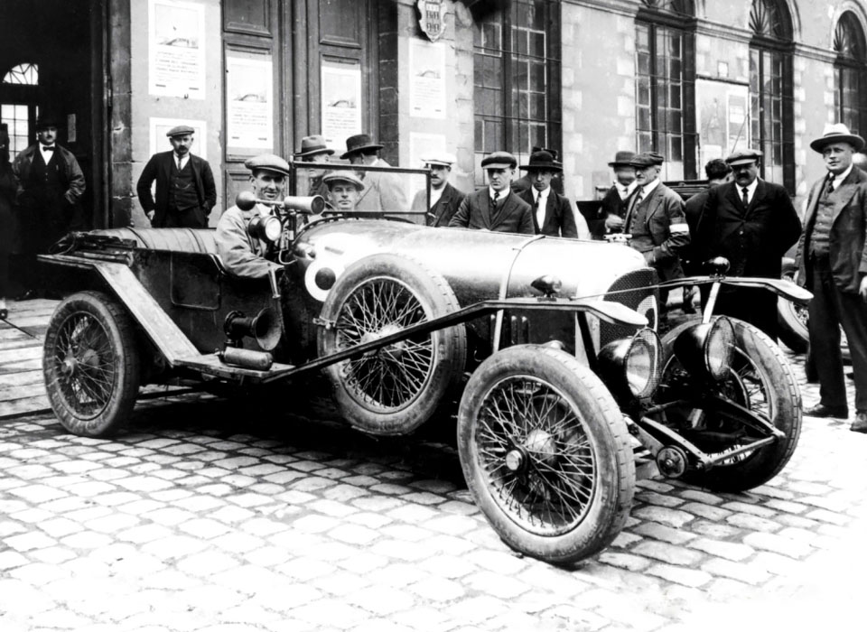
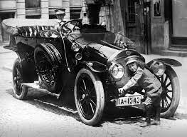
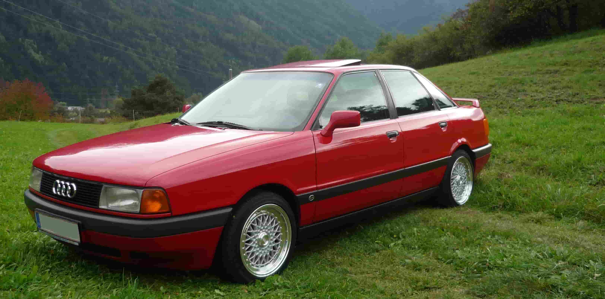
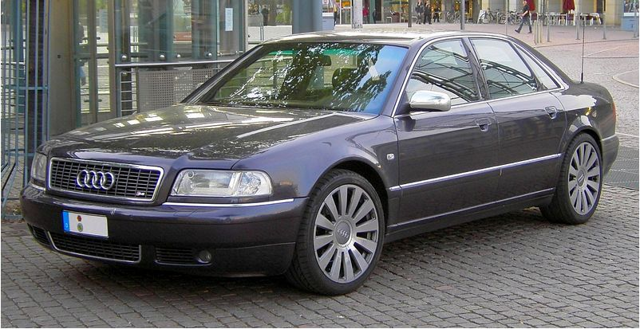

Когда в конце XIX века немецкий инженер-конструктор Август Хорьх организовал предприятие под названием «Horch&Co.», он и подумать не мог, что через каких-то сто лет его детище станет одним из лидеров мирового автопрома. А иначе и не могло быть, ведь к созданию первой машины немца подтолкнула огромная любовь к автомобилям и жажда изобретений.
1899 год, в Германии под Кельном открывается небольшое производство со штатом 11 человек. Именно с него и началась история Ауди. Первая машина «Horch&Co.» увидела свет уже через год, в 1900. Это был автомобиль с двухцилиндровым мотором мощностью всего 4-5 Л.С., развивающий скорость до 60 км/ч. По тем временам первая модель Horch была не так уж и плоха: заднеприводное авто на ремне с передним расположением двигателя, но главное, что было у детища Хорьха, – соединенная с главной передачей коробка передач.

В 1902 году выходит более мощный двухцилиндровик, но уже с карданным валом. Следом за ним Хорьх разрабатывает и третью модель с четырехцилиндровым двигателем мощностью целых 16-20 Л.С. Благодаря дополнительным денежным вливаниям и расширению уставного капитала в 1903 году завод переезжает в Цивиккау и выпускает уже четвертую модель с двигателем 2600 см3 и трехступенчатой коробкой, которая по тем временам полностью удовлетворяла запросы покупателей. Разработчики каждый год радовали своих поклонников новинками, совершенствовали ранние разработки. Но чтобы заявлять о себе, нужна была реклама. И гонки стали лучшим способом ее реализации. Для «Horch&Co.» это был провал, ведь автомобиль, участвовавший в заездах, потерпел неудачу. Акционеры предложили Хорьху уйти с поста главы компании, которую он создал и управлял производством 10 лет.
Человек с сердцем инженера не смог оставаться в стороне и уже в 1909 году открыл новый завод, заняв на это 200 тыс. марок. С названием мудрить не стал и снова решил использовать собственную фамилию. Однако бывшие компаньоны подали на немецкого инженера в суд за плагиат. Пришлось искать другой вариант, и на помощь пришел сын одного из коллег, сыгравший в истории названия Ауди главную роль. Мальчик, изучающий латынь, сразу уловил связь между фамилией автопромышленника и латинским словом «audi» (производным от «audire»): было «слушай», а стало «послушай». Хорьху понравилось перераспределение акцента за счет повелительного наклонения глагола, и новая компания была зарегистрирована именно под этим названием. Первый автомобиль под маркой Audi вышел в 1910 и получил маркировку «А».

Новинки появлялись каждый год, модернизировались старые модели, машины Хорьха все чаше заявлялись на гонки. Успех длился почти 20 лет, пока в Европу не докатилась Великая депрессия, и компания не оказалась на грани банкротства. В 1928 фирму выкупает DKW, но с сохранением оригинального логотипа. В общем, новый хозяин и не претендовал на автомобили, ведь его целью были мотоциклы. За год до этого с конвейера сходит высокотехнологичный по тому времени автомобиль Audi Type R мощностью 100 лошадей, который развивал скорость до 100 км/ч. Второе название модели R было «Imperator» с прицелом на неповторимость.
История создания логотипа Ауди связана с кредитором автопромышленников, Саксонским муниципальным банком. Чтобы не потерять свои средства в разгар мирового кризиса, он заставил объединиться фирмы Audi, Horch, Wanderer и DKW. Так на свет появилась компания Auto Union AG, эмблемой которой стали четыре кольца, как знак равноправного сотрудничества четырех производств. Каждой марке в новом объединении отводилось свое место: Ауди специализировалась на спорткарах, Horch на авто премиум-класса, DKW остался верным мотоциклам, а Wanderer занялся разработкой машин среднего уровня. За 7 предвоенных лет было выпущено две новинки, а с 1937 года началось производство штабной модели Horch 901.
А затем грянула война, которая к своему исходу почти полностью разрушила саксонские заводы. Руководство Auto Union вывозит уцелевшее оборудование в Баварию и в городе Ингольштадте открывает первый склад запчастей. О выпуске нового автомобиля пришлось забыть аж до 1950 года. Именно тогда с конвейера сошло первое послевоенное авто DKW F89 P Master Class. Компания буквально держалась на плаву, испытывала финансовые трудности, поэтому в 1958 она переходит под контроль Daimler-Benz, а с 1964 история Audi продолжается уже в рамках концерна Volkswagen. Новое руководство решает сохранить бренд, что в итоге сыграло ключевую роль в истории развития Ауди, ведь с 1949 по 1965 все разработки инженеров выходили под маркой DKW и NSU.
Volkswagen сохранил название компании, но не хотел ее самостоятельного развития. Новые производственные мощности планировалось использовать только для выпуска флагманской на то время машины «Жук». Главный конструктор поглощенной Auto Union Людвиг Краус, видя, как развивается автомобильный мир, решил втайне разработать инновационную модель. Так появилась легендарная машина Ауди 100 с фирменным знаком из четырех колец на радиаторной решетке. Ее фишкой стал расположенный впереди и охлаждаемый водой двигатель, ведь в то время большинство моделей выпускалось с размещением мотора сзади и использованием технологии охлаждения воздухом. Можно сказать, что детище Крауса позволило Volkswagen заявить о себе с новой силой.

Сначала это были четырех- и двухдверные седаны, а также Audi 100 в кузове купе, которые производились на платформе C1 и комплектовались четырехцилиндровыми двигателями 1.8 литра. В апреле 1970 в истории авто от Ингольштадта появляется автоматическая коробка передач. В 1973 провели рестайлинг модели, поставив на нее не только более мощный движок, но и изменив дизайн. С 1970 года бренд покоряет США, куда поставляется Audi Super 90 и Audi 80, в последствие получившие в Штатах свою маркировку 5000 и 4000 соответственно.
Авто, выпускавшиеся ранее, не могли уже удовлетворить потребности рынка, поэтому Пиех решается не только на рестайлинг, но и на разработку сразу двух новых моделей. Вместо Ауди 80 и 100 появляются А4 и А8, и с конвейера сходят хэтчбек А3 и седан бизнес-класса А6. Оставаясь верным главному принципу компании, состоящему в соблюдении высоких технологий, инженеры работают над созданием машины представительского класса, оборудованной дизельным двигателем. В 1997 выходит А8, машина, которой в течение последующих 7 лет суждено было стать единственным авто в своем классе, работающем на дизеле.
Разрабатывались новые двигатели, началось массовое производство машин в цельноалюминиевом кузове, улучшался дизайн и технические возможности авто. Все это позволило концерну Ауди в начале 2000-х выйти в лидеры европейского автопрома. Если в 2000 было продано 653000 автомобилей, то в 2008 эта цифра была уже 1003000. По традиции, немецкие авто продавались у себя в регионе, при этом статистика говорила о возросшем интересе к этой марке Востока. Только в Китай в 2009 году было продано 108 тыс. машин из общего потока в эту страну 705 тыс. автомобилей. В этот же период получила развитие и история колец Ауди: почувствовав свою мощь, руководство решает видоизменить логотип, сделав кольца объемными, а название бренда более строгим и лаконичным. Финансовая мощь Audi позволила компании стать главным вкладчиком в материнский концерн Volkswagen. Несмотря на широкий диапазон выпускаемых авто, она все так же входит в группу, ориентированную на разработку спорткаров, в ней так же участвуют Lamborghini и SEAT.

Основные заводы Ауди расположены в Ингольштадте и Неккарзульме, городах, где производились еще первые авто. После присоединения к концерну Сеата под контроль немцев перешло производство в Братиславе. Также работают заводы в Бельгии, Испании, Венгрии, Индии, Китае, Индонезии, в 2012 было начало первое североамериканское производство в Мексике мощностью 150 тыс. автомобилей в год. Всего концерн владеет 17 производственными площадками в 13 странах мира.